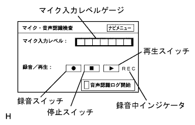
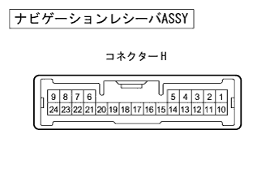
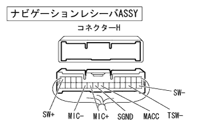
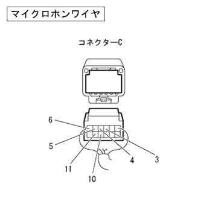
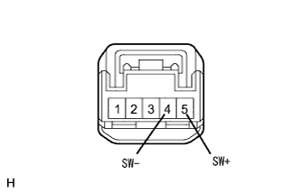

HDD navigation system cannot be recognized, hands -free transmission audio does not appear, noise is entered |
reference)reference)reference)| Step 1 | Diagnostic activation |
reference| Step 2 | Mike test (microphone input level) |
|  |
Mike test (microphone input level)
Select "Navi Inspection" on the diagram inspection menu screen and display the navigation inspection menu screen.
Select the "microphone / speech recognition test" on the navigation menu screen and display the microphone audio recognition inspection screen.
Voice toward the microphone and check the display of the microphone input level gauge.
|
| ||||
| OK | |
| Step 3 | Mike test (recording / regeneration of voice voice) |
Mike test (recording / regeneration of voice voice)
After pressing the recording switch, the voice is uttered for the microphone and the audio is recorded.
Press the playback switch and check the recorded audio.
|
| ||||
| OK | |
| Step 4 | Re -operation (audio recognition) |
Re -operation (audio recognition)
Pay attention to the utterance status and perform voice recognition operation again.
|
| ||||
| NG | ||
| ||
| Step 5 | Navigation receiver ASSY inspection (microphone power supply, earth) |
|  |
Preparation before inspection
Cut the connector H from the navigation receiver ASSY.
Voltage inspection
Use the SST (Toyota Electrical Tester) to check the voltage between the connector Macc (H17) terminal and the body ground ground on the side of the navigation receiver asy.
| Tester connection (Plus ← → minus) | Measurement conditions | Reference value |
|---|---|---|
| Macc (H17) ← → Body Earth | IG Switch ACC | 5V |
Conduction inspection
Use SST (Toyota Electrical Tester) to inspect each terminal of the navigation receiver ASSY and the conjunction between the body earth.
| Tester connection (Plus ← → minus) | Measurement conditions | standard |
|---|---|---|
| TSW- (H12) ← → Body Earth | Always | There is an conductor |
| SGND (H18) ← → Body Earth | Always | There is an conductor |
|
| ||||
| OK | |
| Step 6 | Micro hon wire inspection |
Conduction inspection
Cut each connector of the micro hon wire.
Use SST (Toyota Electrical Tester) to inspect the conduction between each terminal of the microphone.
| Tester connection | Measurement conditions | standard |
|---|---|---|
| A1 ← → C5 | Always | There is an conductor |
| A2 ← → C3 | Always | There is an conductor |
| A4 ← → C4 | Always | There is an conductor |
| A5 ← → C6 | Always | There is an conductor |
| B4 ← → C11 | Always | There is an conductor |
| B5 ← → C10 | Always | There is an conductor |
|
| ||||
| OK | |
| Step 7 | Wire harness and connector inspection (navigation receiver ASSY ← → Micro hon wire) |
|  |
Preparation before inspection
Cut the connector H of the navigation receiver ASSY.
|  |
Cut the Micro Hon wire connector C.
Conduction inspection
Use SST (Toyota Electrical Tester) to check the conversation between the wire harness connectors on the wire harness connector on the navigation receiver ASSY side.(The terminal array isreference)
| Tester connection (Navigation receiver ASSY side ← → Navigation receiver ASSY side) | standard |
|---|---|
| TSW- (H12) ← → SGND (H18) | There is an conductor |
Conduction inspection
Use SST (Toyota Electrical Tester) to inspect the conversation between the wire harness between the vehicles on the vehicle side between the navigation receiver Assembly ← → the microphone wire.(The terminal array isreference)
| Tester connection (Navigation receiver ASSY side ← → Micro hon wire side) | standard |
|---|---|
| Macc (H17) ← → C6 | There is an conductor |
| MIC+(H19) ← → C4 | There is an conductor |
| MIC- (H20) ← → C3 | There is an conductor |
| Sw+(h9) ← → C10 | There is an conductor |
| SW- (H10) ← → C11 | There is an conductor |
Conduction inspection
Use SST (Toyota Electrical Tester) to check the conversation between the wire harness of the vehicle side between the microphone wire ← → the body earth.(The terminal array isreference)
| Tester connection (Micro Hon Wire side ← → Body Earth) | standard |
|---|---|
| C5 ← → Body Earth | There is an conductor |
Short -circuit inspection
Use SST (Toyota Electrical Tester) to inspect the conversation between terminals and body earthly terminals and body earth wire harness connectors on the navigation receiver asy side.(The terminal array isreference)
| Tester connection | standard |
|---|---|
| Macc (H17) ← → Body Earth | Without conduction |
| MIC+(H19) ← → Body Earth | Without conduction |
| MIC- (H20) ← → Body Earth | Without conduction |
| SW+(H9) ← → Body Earth | Without conduction |
| SW- (H10) ← → Body Earth | Without conduction |
|
| ||||
| OK | |
| Step 8 | Telephone Microphone ASSY inspection |
Waveform inspection
IG Switch ACC.
 |
Use SST (Tascan) to check the waveform between the terminals between MIC+(4) ← → Mac- (2) while connected to the telephone microphone asshon asshon asser Assembly.
|
| ||||
| OK | |
| Step 9 | Telephone switch Assembly Single Inspection |
Conduction inspection
|  |
Separate the connector of the telephone switch asser.
Use SST (Toyota Electrical Tester) to inspect the conduction between each terminal.
| Tester connection | Measurement conditions | standard |
|---|---|---|
| Sw+(5) ← → sw- (4) | Pressing voice recognition switch → release | There is conduction → None |
|
| ||||
| OK | ||
| ||